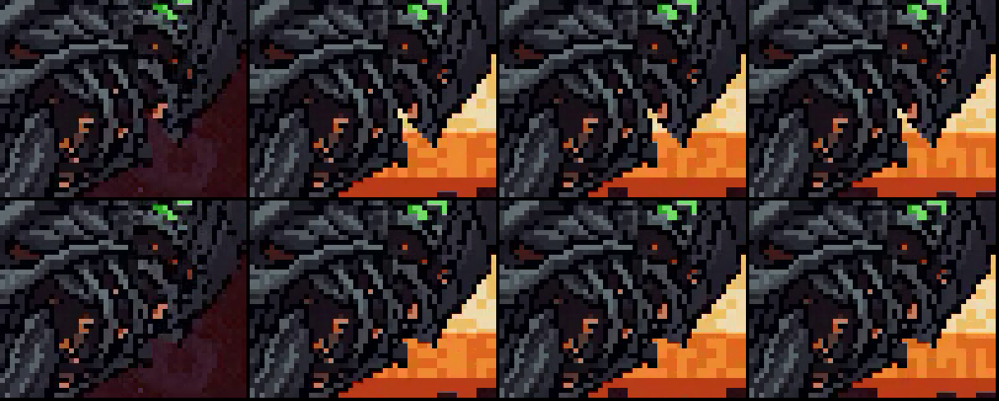
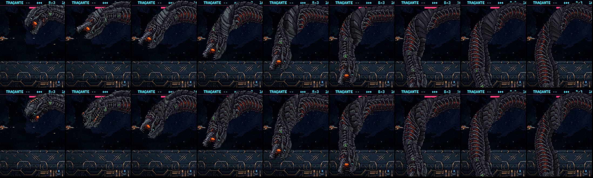
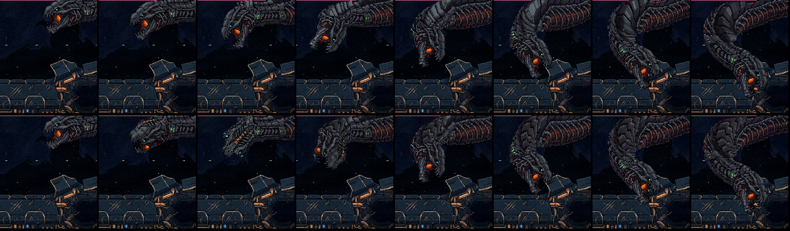
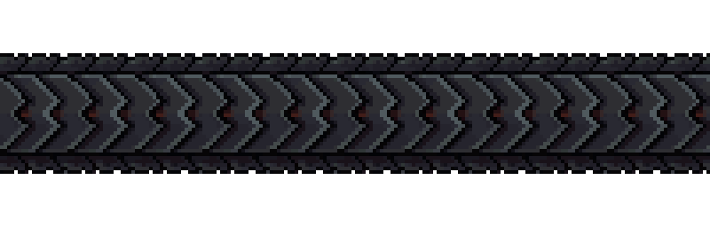
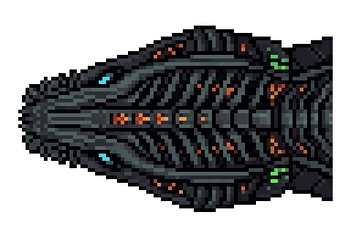
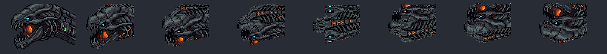

A enguia colossal: a girada do corpo e da cabeça
07/11/2026 · START plans/2026-11-07-enguia-geracoes-START.md, etapas 1 e 2 · instalado na maquete, fora do jogo · substitui a folha enguia-cabeca-8dir
Rodada 2: os seus dois ajustes (o resto você aprovou)
- A espinha saiu do dorso. Os nós de energia no meio das costas não existem na arte do lado, então apareciam do nada no meio do rolar. Agora as divisas se encontram em ponta no centro, e o rolar mostra só as placas escuras passando. Os vídeos e as imagens abaixo já são desta rodada.
- A fenda no clarão fechou. Era um vão de 2 px entre o fundo da mandíbula e o pescoço: a pele sob o crânio parava antes da mandíbula. Ela agora desce em rampa até encostar, só nas 5 colunas da junta. O Eco, onde essa pele já tinha aparecido, continua limpo.

A fenda no clarão dos canos (0:19), ampliada: em cima antes, embaixo depois.
O que mudou, em uma frase
A enguia agora tem o dorso desenhado, do corpo e da cabeça. No meio do rolar, as costas aparecem de verdade em vez de esticar a lateral, e a cabeça rola junto com o corpo, passando por ¾ e pelo dorso, em vez de trocar de lado num quadro.
Para você ver: o vídeo das viradas logo abaixo (antes e depois, velocidade real e 4× mais lento) e a luta inteira no fim. Aprovado em 07/11 com os dois ajustes acima; as etapas 1 e 2 fecharam com commit e push.
1 · As viradas, antes × depois
Em cima, como estava; embaixo, o novo. À esquerda, a chegada (4,4 s); à direita, o mergulho (21 s; o mesmo nos outros ciclos). Primeiro em velocidade real, depois 4× mais lento.
A chegada, quadro a quadro

Um quadro a cada 0,25 s desde o começo do rolar. Em cima: as placas lisas e esticadas (o seu círculo). Embaixo: as divisas do dorso, no tamanho das costelas.
O mergulho, quadro a quadro

Um quadro a cada 0,1 s. Em cima: a cabeça estala entre o 3º e o 4º quadro, e o leque liso abre na curva. Embaixo: a cabeça passa pelo dorso e pelo ¾, e a curva mostra as costas.
2 · Por que esticava, e o que fiz
A causa: a faixa do corpo é só o LADO da enguia. As placas das costas aparecem nela de viés, em poucas linhas. No meio do rolar, quem encara a câmera são as costas, e elas não existiam desenhadas: qualquer conta só podia esticar aquelas poucas linhas. Mudar a curva da chegada (a r4lenta da folha anterior) só diminuía o trecho esticado.
A correção, a mesma para o corpo e a cabeça: o cilindro agora tem duas texturas, e cada ponto usa a que o vê de frente.
- Os flancos: a arte aprovada, sem esticar.
- As costas: um dorso visto de cima, gerado no PixelLab no estilo da arte aprovada.
- A parte das costas cresce com o rolar: nenhuma em repouso, então a enguia parada e de perfil continua idêntica à aprovada; as placas todas no meio da virada.
- A emenda fica na divisa natural entre as placas e as costelas, com um pontilhado de 1 px.
A luz acompanha: a normal de cada pixel gira junto com ele, então o lado que vira para a luz acende, como no resto do corpo.
O dorso do corpo

As divisas em chevron, num período limpo repetido pelo comprimento do corpo (19 px, duas placas). A espinha de energia do original foi retirada na rodada 2. (×4)
A cabeça: o dorso e as vistas

O dorso da cabeça (×4): escolhido entre 18 candidatas por ter o vocabulário da E3, com brasas na espinha, respiros verdes e olhos ciano. Entra só no topo do crânio; os olhos vêm sempre da E3.

As vistas do rolar: 0° (a E3), 20°, 40°, 60°, 90° (o dorso), 120°, 140°, 160°. São 19 vistas de 10° em 10°, calculadas da E3 e do dorso; o 180° é a E3 espelhada.
Para observar no vídeo
- De 140° a 170° aparece o segundo olho (o do lado de lá) por um ou dois quadros, antes de a cabeça fechar no perfil espelhado.
- O mergulho rola rápido (0,34 s): a cabeça passa por ~4 vistas. A chegada leva 0,65 s.
- A curva da chegada é a de hoje (a da rodada 6), não a
r4lenta: com o dorso, ela deixou de esticar.
3 · A luta inteira
A sonda que desvia, com o corpo e a cabeça novos. Nenhum número da luta mudou.
Como refazer
- Os dorsos:
node scripts/_serpente/_enguia-dorso-gerar.mjs corpo|cabecaTexto <seed>(PixelLab Pro, 10 gerações por chamada); o do corpo vira a faixa com_enguia-dorso-faixa.mjs. - Os arquivos:
enguia-dorso/dorso-corpo.pngeenguia-dorso/dorso-cabeca.png, lidos porarte.mjs(carregaDorso,vistasCabeca).ENGUIA_DORSO=0/ENGUIA_VISTAS=0voltam ao jeito antigo, para comparar. - A maquete:
node scripts/_serpente/_enguia-maquete.mjs desvia <dir> corpo=pele fotos=1